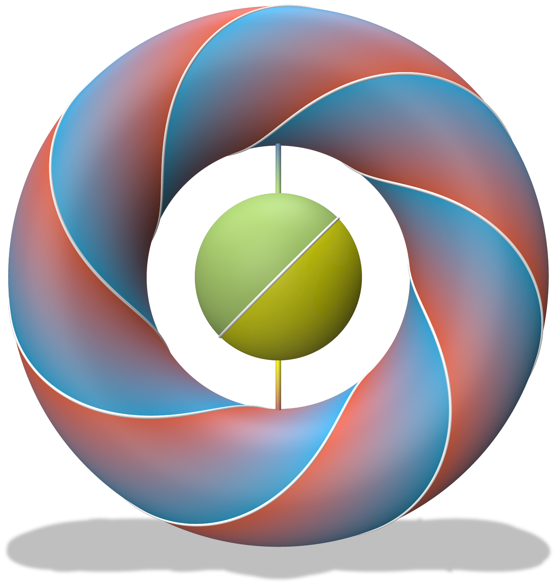

|

|
|
Abstract:
Many geometry processing techniques require the solution of partial differential equations (PDEs) on manifolds embedded in ℝ2 or ℝ3, such as curves or surfaces. Such manifold PDEs often involve boundary conditions (e.g., Dirichlet or Neumann) prescribed at points or curves on the manifold's interior or along the geometric (exterior) boundary of an open manifold. However, input manifolds can take many forms (e.g., triangle meshes, parametrizations, point clouds, implicit functions, etc.). Typically, one must generate a mesh to apply finite element-type techniques or derive specialized discretization procedures for each distinct manifold representation. We propose instead to address such problems in a unified manner through a novel extension of the closest point method (CPM) to handle interior boundary conditions. CPM solves the manifold PDE by solving a volumetric PDE defined over the Cartesian embedding space containing the manifold, and requires only a closest point representation of the manifold. Hence, CPM supports objects that are open or closed, orientable or not, and of any codimension. To enable support for interior boundary conditions we derive a method that implicitly partitions the embedding space across interior boundaries. CPM's finite difference and interpolation stencils are adapted to respect this partition while preserving second-order accuracy. Additionally, we develop an efficient sparse-grid implementation and numerical solver that can scale to tens of millions of degrees of freedom, allowing PDEs to be solved on more complex manifolds. We demonstrate our method's convergence behaviour on selected model PDEs and explore several geometry processing problems: diffusion curves on surfaces, geodesic distance, tangent vector field design, harmonic map construction, and reaction-diffusion textures. Our proposed approach thus offers a powerful and flexible new tool for a range of geometry processing tasks on general manifold representations.
|

![[PHOTO]](../../images/knight_small.png)